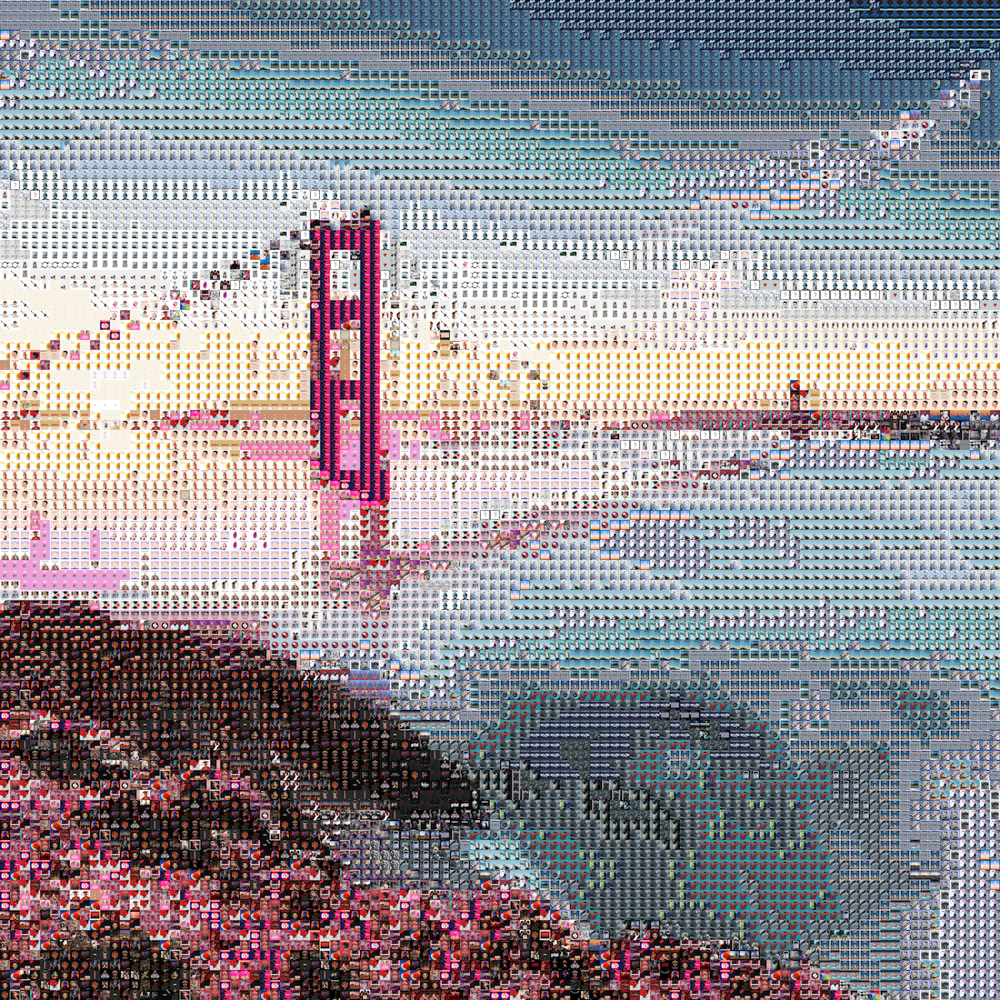

Generating Photo Mosaics out of Album Covers (from Spotify!)
Feb 17, 2019
Visit the web app here!
One day, I had the thought of creating a giant poster of iconic album covers. I already began to figure out how to stitch images together onto a single canvas with JavaScript. However, I realized I would be the only one to use my software. Wanting others to use this artistic tool for themselves, I converted my algorithms into a web app. For an extra touch of personalization, the album cover pool used to compose mosaics come directly from the user's spotify playlists! Here's an example of my own music used to represent the Golden Gate Bridge:
Wow 😍. I needed to keep working on this project.
Prerequisites
- Javascript/jQuery
- HTML5 Canvas
- API Requests
- Iteration/Selection
- Good Music Taste
Plan
- Authenticate user with Spotify
- Obtain album covers from playlists
- Select image to be recreated
- Generate photo mosaic
- Allow creation to be downloaded
This walkthrough will focus less on the UI, and more on the app's underlying functions.
Launching the Website
All operations will be made from localhost. Our website's source files will be served through this simple http server made with Node.js and Express. Upon typing "$ node simpleServer.js" into the command line, we can find index.html at http://localhost:8888/.
Spotify Authentication Flow
First, let's set up an app on Spotify's developer site. There, we can obtain our client key: a string that allows us access to the services API. We can also set a whitelist of redirect urls for when the user has successfully signed in. I whitelisted multiple urls for production (domain) and development (localhost:port#).
Signing into Spotify
Clicking on an element $("#login") will redirect the user to Spotify's authentication page. Inserted into the url are parameters containing our desired redirect url (same page), client key, and state string. Spotify's servers use this state string to ensure security across API calls. The front end sends a unique string to Spotify's back end. If the response does not contains the same state value, we know that the response is not intended for us or was tampered with.
When the user returns from the spotify login page, the location url has hash params containing an access token and the state key. Let's save these values for the next step.
Loading User Information
Now, we can compare the returned state to the value we sent. If the values are identical, we can use our access token to query Spotify's API for the user's profile information. We'll save all user data under a global variable for use everywhere throughout the project.
Processing Playlist and Track Data
We can also query Spotify for the user's playlists. At the same time, let's traverse each playlist's tracks and create an array of unique album covers. Again, information is saved to the global data value.
Generating the Mosaic
In the UI, the user has selected which playlists it wants to include in the mosaic. We can iterate across these playlists and compile an array of unique album covers. Also, let's calculate each photo's average color now to save time later.
Then, we compute the mosaic's tile dimensions. Our algorithm maximizes the number of tiles without going over the user-set maximum value.
Using a canvas element, let's resize the target image to the tile dimensions we just calculated.
At the same time, let's set up our mosaic canvas, which we will draw album covers onto and display to the user. Each album cover's width is 64 pixels.
Finding the Right Album Covers
This is where the code gets interesting. Canvas has a method that allows us to extract pixel data as a one-dimensional array. Every four values follow the repeating pattern {r, g, b, a}. For our pursposes, let's create a new array of pixel objects. We can ignore the alpha chanel.
At this point, the computer's fans might start to spin. For each pixel, we try to find the album cover with the closest average color, according to a least-mean-square formula.
Presenting Mosaic to User
Drawing album covers onto our mosaic canvas uses the same drawing method from earlier. Once we calculate the image's x and y offset, we can essentially paste the album cover onto the canvas, one at a time. When all images are rendered, we prepare the canvas for an image download.
The canvas' data is extracted as a PNG and formatted as a dataURL. We can attatch this url to the UI's download button, which will take the user to a new tab with just the image (downloadable).
Create Your Album Cover Masterpiece
Visit the site here
I'd LOVE to see what you come up with. Share your mosaics with me on Instagram.